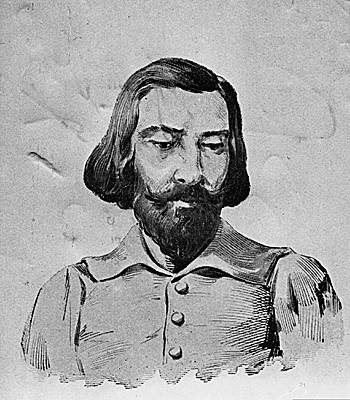

A Farsa de Inês Pereira
A Farsa de Inês Pereira é uma comédia de costumes escrita por Gil Vicente, e que relata os comportamentos amorais e degradantes da sociedade na época. Conta a história de Inês Pereira, uma jovem solteira e bonita, que é obrigada a passar o dia em suas tarefas domésticas, o que a faz se queixar da vida que tem e enxergar o casamento como uma oportunidade de fugir daquela vida.
Gil Vicente
Gil Vicente (1465-1536) foi um dramaturgo e poeta português, o representante maior da literatura renascentista de Portugal antes de Camões. Criador de vários autos é considerado o fundador do teatro em Portugal.
Nasceu em Guimarães, Portugal no ano de 1465. Por falta de documentos, muitos fatos de sua vida são cercados de dúvidas, como o próprio local e ano de seu nascimento. Sabe-se que sua atividade de dramaturgo foi desenvolvida em torno da corte portuguesa, abrangendo os reinados de D. Manuel I e de D. João III.